In this lab, you will create a Galaxy based on the Blank Galaxy template and connect to it using the
System Platform IDE. Then you will import some prebuilt automation objects into the Galaxy and
configure some of them. For example, you will configure a WinPlatform to work in a multi-node
environment and an AppEngine to historize data to Historian.
Once the Galaxy is created and configured, you will deploy it and use Object Viewer to verify that
attributes are receiving data in runtime.
The Galaxy you create in this lab will be used for the other labs in this course.
Objectives
Upon completion of this lab, you will be able to:
Create a Galaxy
Import objects into a Galaxy
Deploy objects
Verify data using Object Viewer
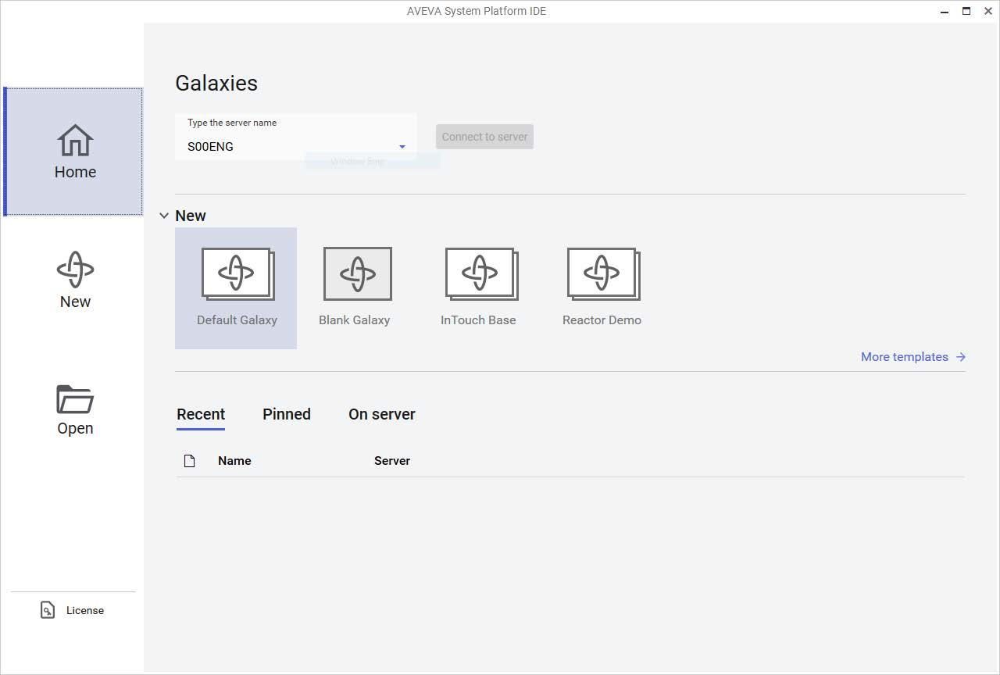
System Platform IDE: Galaxies Dialog Screenshot: AVEVA System Platform IDE "Galaxies" dialog box — the startup dialog: - Left Navigation Sidebar: Home (active, blue highlight), New (plus i...
Create a Galaxy
First, you will create a Galaxy based on the Blank Galaxy template and connect to it.
1.
Open the System Platform IDE.
The Galaxies dialog box appears.
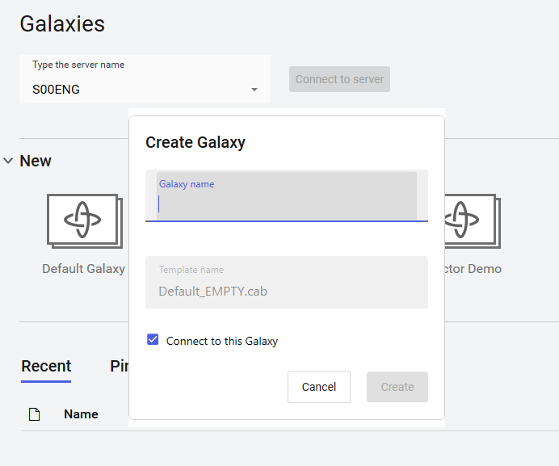
Create Galaxy Dialog Screenshot: "Create Galaxy" dialog box overlaid on the Galaxies window: - Galaxy name field: empty text input (blue underline, active), placeholder "Galaxy name" — no text...
Lab 1 – Creating and Deploying a Galaxy
2.
In the New area, select the Blank Galaxy template.
Note: Be sure to select the Blank Galaxy template. This will create a Galaxy that contains only base template objects. In a later step, you will import some prebuilt objects into your Galaxy. The Create Galaxy dialog box appears.
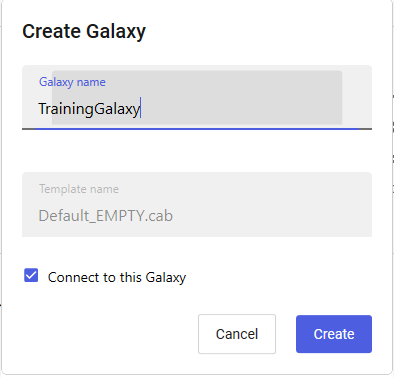
Galaxy Creation Steps Step 3: Enter "TrainingGalaxy" in Galaxy name field. Connect to this Galaxy enabled by default. Screenshot 1: Create Galaxy dialog with "TrainingGalaxy" entered (red ...
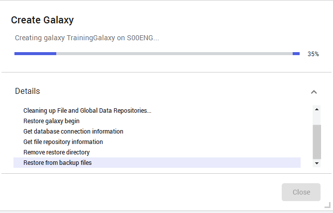
Galaxy Creation Steps Step 3: Enter "TrainingGalaxy" in Galaxy name field. Connect to this Galaxy enabled by default. Screenshot 1: Create Galaxy dialog with "TrainingGalaxy" entered (red ...
3.
In the Galaxy name field, enter TrainingGalaxy.
Notice that the Connect to this Galaxy option is enabled by default.
4.
Click Create.
The Create Galaxy dialog box shows the progress of the Galaxy creation process, as well as
informational message details. This will take a few moments.
It is important to review the messages shown in the Create Galaxy dialog box to make sure no
errors occurred.
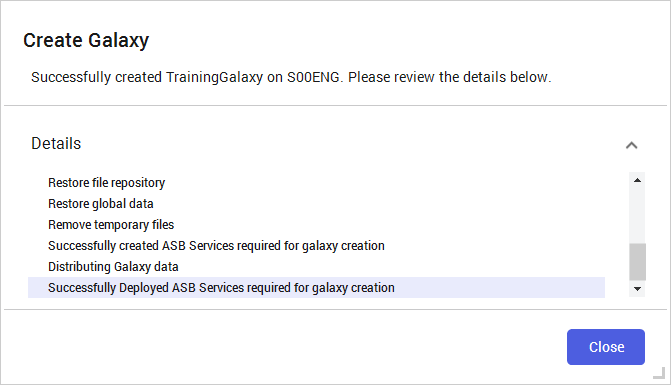
Galaxy Creation Complete & IDE Create Galaxy completion dialog: "Successfully created TrainingGalaxy on S00ENG. Please review the details below." Details list: Restore file repository, Restore...
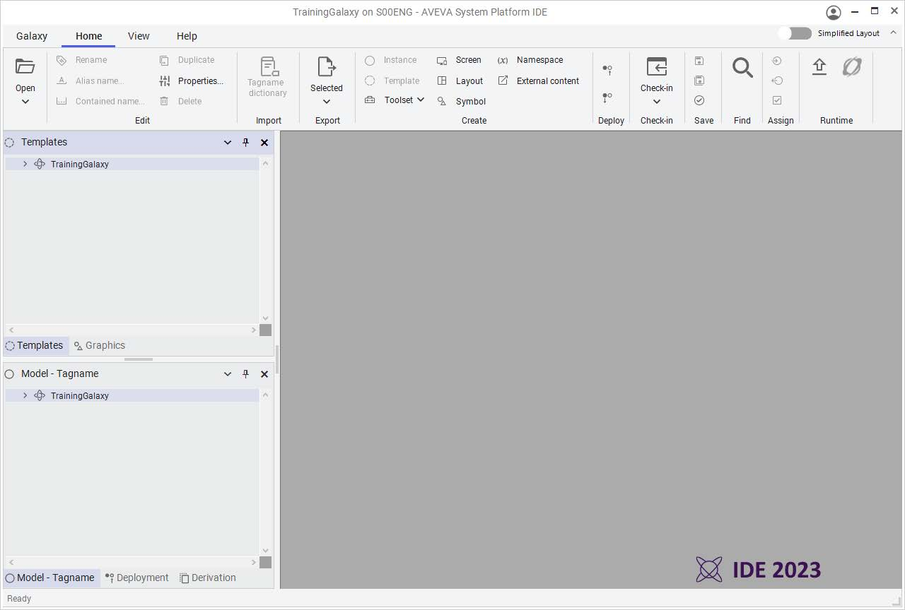
Galaxy Creation Complete & IDE Create Galaxy completion dialog: "Successfully created TrainingGalaxy on S00ENG. Please review the details below." Details list: Restore file repository, Restore...
Lab 1 – Creating and Deploying a Galaxy
When the Galaxy creation progress indicates Successfully created TrainingGalaxy, the
Close button becomes enabled.
5.
Click Close.
After a few moments, the Galaxy opens in the System Platform IDE.
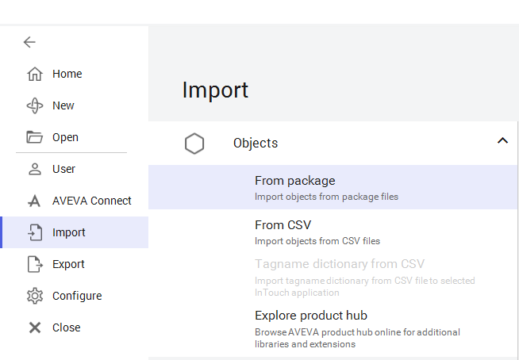
Import Objects Backstage Screenshot 1: System Platform IDE Backstage (Galaxy > Import): - Left sidebar: Home, New, Open, User, AVEVA Connect, Import (highlighted light blue), Export, Confi...
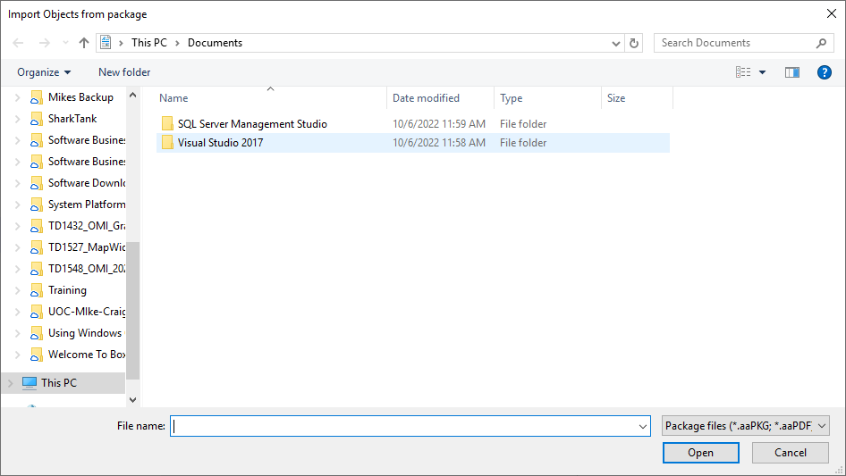
Import Objects Backstage Screenshot 1: System Platform IDE Backstage (Galaxy > Import) with Import highlighted. Screenshot 2: Import Objects from package file dialog showing Documents folder with package file filter (*.aaPKG; *.aaPDF).
Import Objects
Next, you will import some prebuilt objects into the Galaxy.
6.
On the ribbon, select the Galaxy menu, and then select Import | Objects | From package.
Note: Selecting the Galaxy menu opens the System Platform IDE backstage. The Import Objects from package dialog box appears.
Import Package & Preferences Screenshot 1: File picker in C:\Training folder with Lab 1 - Galaxy_Prebuilt.aaPKG selected. Screenshot 2: Import preferences dialog with options for handling duplicate objects, base templates, naming conflicts, and template protection.
Lab 1 – Creating and Deploying a Galaxy
7.
Navigate to C:\Training, select the Lab 1 - Galaxy_Prebuilt.aaPKG file, and then click Open.
The Import preferences dialog box appears.
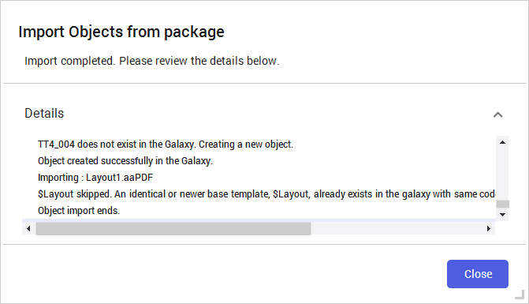
Import Completion Step 8: Leave defaults, click Import. Step 9: Click Close when "Import completed". Step 10: Click back arrow. Screenshot 1: Import completion dialog: "Import comp...
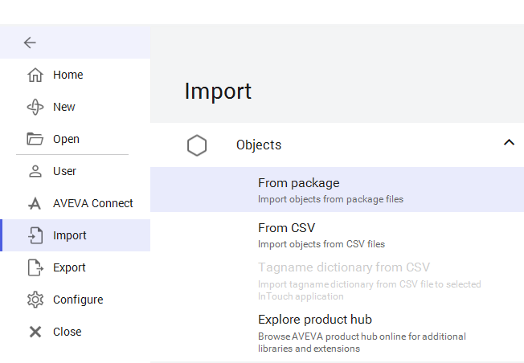
Import Completion Step 8: Leave defaults, click Import. Step 9: Click Close when "Import completed". Step 10: Click back arrow. Screenshot 1: Import completion dialog showing "Import completed" status. Screenshot 2: Backstage Import view after closing completion dialog, before clicking back arrow.
8.
Leave the default import preferences and click Import.
The Import Objects from package dialog box shows the progress of the import process, as
well as informational message details.
It is important to review the messages shown in the Import Objects from package dialog box
to make sure no errors occurred.
9.
When the import progress indicates Import completed, click Close.
10. In the top-left corner of the backstage view, click the left arrow button to return to the main
page of the System Platform IDE.
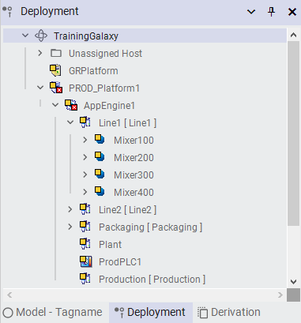
Configure Platform Step 11: Navigate Deployment view to TrainingGalaxy > PROD_Platform1 > AppEngine1 > Line1. Step 12: Double-click PROD_Platform1 to open Object Editor. Step 13: Enter...
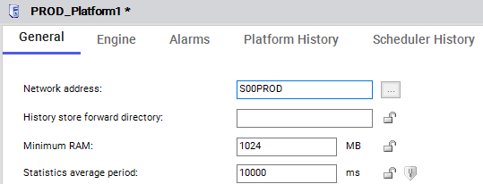
Configure Platform Step 11: Navigate Deployment view to TrainingGalaxy > PROD_Platform1 > AppEngine1 > Line1. Step 12: Double-click PROD_Platform1 to open Object Editor. Step 13: Enter...
Lab 1 – Creating and Deploying a Galaxy
Configure the Platform
In the following steps, you will configure the network address of a WinPlatform object, which is
named PROD_Platform1.
11. In the Deployment view, expand TrainingGalaxy \ PROD_Platform1 \ AppEngine1 \ Line1
to see the objects.
12. Double-click PROD_Platform1 to open it in the Object Editor.
13. On the General tab, in the Network address field, enter the name of the computer to deploy
this platform.
Note: Your instructor will provide the node name for this computer. In the example below, S00PROD is shown as the name of the computer.
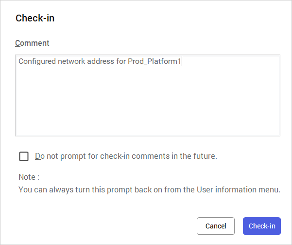
Check-in Dialog Step 14: Save and close PROD_Platform1 editor. Check-in dialog appears. Step 15: Enter comment and click Check-in. Screenshot: "Check-in" dialog: Comment text box with ...
14. Save and close the PROD_Platform1 editor.
The Check-in dialog box appears.
15. Enter a comment and click Check-in.
Note: Entering a comment in the Check-in dialog box is optional, but recommended.
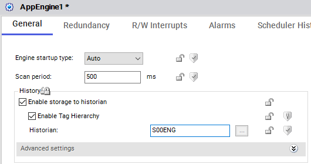
Configure Engine for Historian & Deploy Step 16: Double-click AppEngine1 to open Object Editor. Step 17: Enter Historian node name on General tab. Screenshot 1: AppEngine1 Object Editor*...
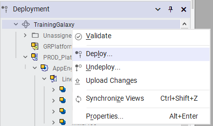
Configure Engine for Historian & Deploy Step 16: Double-click AppEngine1 to open Object Editor. Step 17: Enter Historian node name on General tab. Screenshot 1: AppEngine1 Object Editor with Historian field set to S00ENG. Screenshot 2: Deployment tree with right-click context menu on AppEngine1 showing Deploy, Undeploy, and other options.
Lab 1 – Creating and Deploying a Galaxy
Configure the Engine for Historian
In the following steps, you will configure the Historian connection for an AppEngine object, which is
named AppEngine1.
16. In the Deployment view, double-click AppEngine1 to open it in the Object Editor.
17. On the General tab, in the Historian field, enter the node name where Historian is installed.
Note: Your instructor will provide the node name for this computer. In the example below, S00ENG is shown as the Historian node name. 18. Save and close the AppEngine1 editor, and check in the object. Deploy the Galaxy Now you will deploy the Galaxy to runtime. 19. In the Deployment view, right-click TrainingGalaxy and select Deploy.
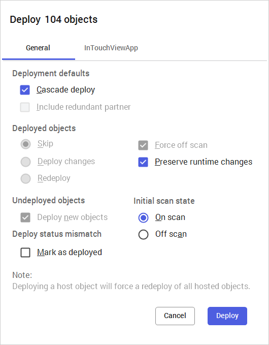
Deploy Dialog Screenshot: "Deploy 104 objects" dialog — Two tabs: General (active), InTouchViewApp. Sections: 1. Deployment defaults: Cascade deploy (checked), Include redundant partner (unche...
The Deploy dialog box appears.
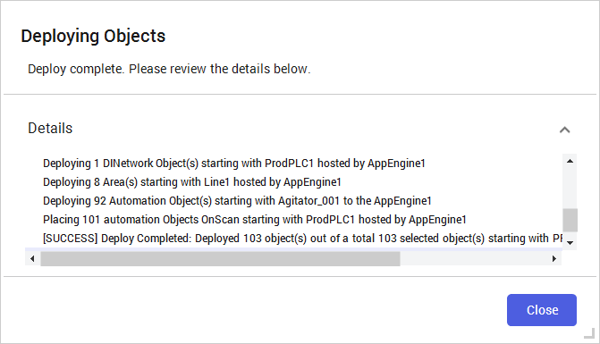
Deploy Complete Step 20: Click Deploy with default settings. Step 21: Click Close when "Deploy complete". Screenshot: "Deploying Objects" dialog: Status: "Deploy complete. Please revie...
Lab 1 – Creating and Deploying a Galaxy
20. Leave the default deployment settings and click Deploy.
The Deploying Objects dialog box shows the progress of the deployment process, as well as
informational message details. This will take a few moments.
It is important to review the messages shown in the Deploying Objects dialog box to make
sure no errors occurred.
21. When the deployment progress shows Deploy complete, click Close.
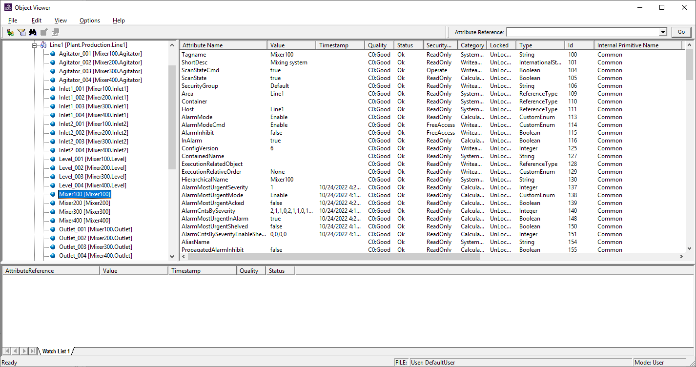
Object Viewer & Watch List Step 22: Right-click Mixer100 > View in Object Viewer. Step 23: Right-click Watch List 1 > Open. Screenshot 1: Object Viewer window — Left pane: tree view of...
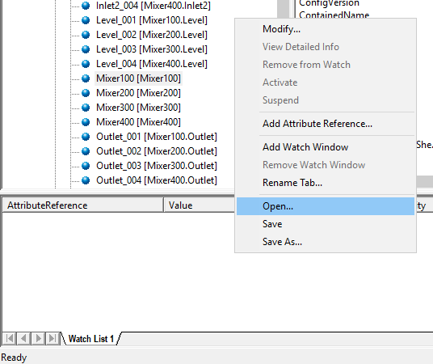
Object Viewer & Watch List Step 22: Right-click Mixer100 > View in Object Viewer. Step 23: Right-click Watch List 1 > Open. Screenshot 1: Object Viewer window — Left pane: tree view of...
Screenshot 2: Watch List 1 context menu — Open... (highlighted), Modify..., View Detailed Info, Remove from Watch, Activate, Suspend, Add Attribute Reference..., Add Watch Window, Remove Watch Window, Rename Tab..., Save, Save As...]
View Runtime Data
Now that your Galaxy is deployed, you will use Object Viewer to monitor runtime data and verify
that attributes are receiving data. A saved watch list is provided.
22. In the Deployment view, right-click Mixer100 and select View in Object Viewer.
Note: You can right-click any object in the Deployment view to open Object Viewer. The Object Viewer window appears, showing the list of attributes for Mixer100. 23. Right-click in the Watch List 1 window and select Open. The Open dialog box appears.
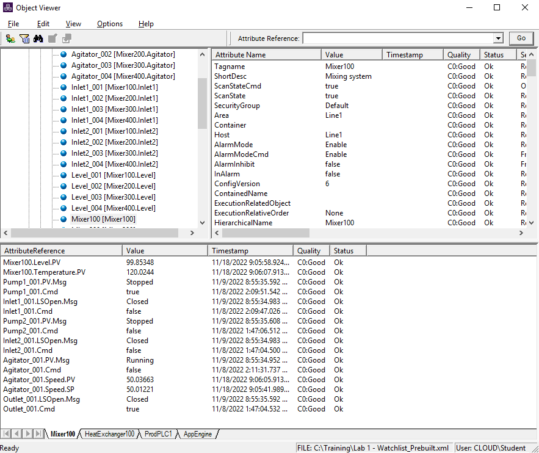
Object Viewer with Watch Window Step 24: Open Lab 1 - Watchlist_Prebuilt.xml from C:\Training. Opens Mixer100 watch window. Screenshot: Object Viewer — Full application window with menu ba...
Lab 1 – Creating and Deploying a Galaxy
24. Navigate to C:\Training, select Lab 1 - Watchlist_Prebuilt.xml, and then click Open.
The Mixer100 watch window appears in Object Viewer, with some attributes already added.
You can resize the watch window if needed to view the whole list of attributes.
25. In the Mixer100 watch window, verify that all attributes are receiving data.
The received data values are simulated values provided by a simulation application, to which
the OI.MBTCP connects.
Note: Notify your instructor if any attributes are not receiving Good quality data. 26. When you are finished reviewing attribute data, close Object Viewer. <End of Lab>
Lab Review
Q1: What are the key steps you performed in this lab?
Review the lab steps above and list the main configuration actions you completed.
Q2: What would happen if you skipped a configuration step?
Consider the dependencies between steps and how skipping one might affect the outcome.